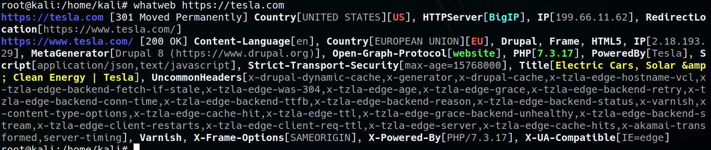

Whatweb : tool in kali

Builtwith : website
Wappalyzer: adds on
More use vary information tools is more information gathering. In these other tools we are not able to identify exactly what its version of php for example but when we use whatweb we could identify exactly (php 7.3.7)